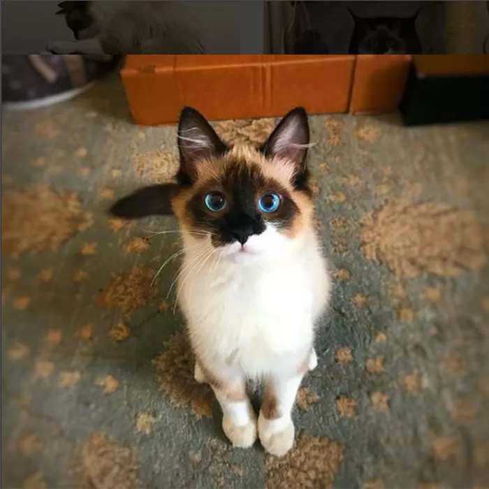

Apresentação Super DEV
Olá, meu nome é João Victor, tenho 20 anos e estou fazendo Super DEV para
criar networking e aprender novas habilidades técnicas na área de computação.
Índice
-
Coisas que eu gosto
-
Objetivos
-
Frase motivacional
Coisas que eu gosto
Eu gosto de ler e estudar filosofia no tempo livre, além de experientar com
projetos simples em C, C++ ou Java.
Hobbies:
-
Videogames;
Jogos que eu gosto
- Minecraft;
- Project Zomboid;
- Factorio; e
- Kingdom Rush.
-
Brincar com minha cachorrinha;
Sobre ela
-
Uma maltês de ~3,5kg com cara de coitada mas que está
muito bem alimentada.
-
Ela é inteligente, embora na maior parte do tempo dê a
entender que o cérebro dela não tem estrias e que tem
espaço extra na cavidade craniana.
-
Gosta de bifinho, frango e de brincar de pegar.
- Musculação;
- Etc.
Objetivos
- Aprender HTML;
- CSS;
- Git/GitHub;
- JavaScript; e
- Python.
Imagens


Frase motivacional
Homens fortes criam tempos fracos,
Homens fáceis criam tempos difíceis...
Paula Cartney (provavelmente)
Voltar